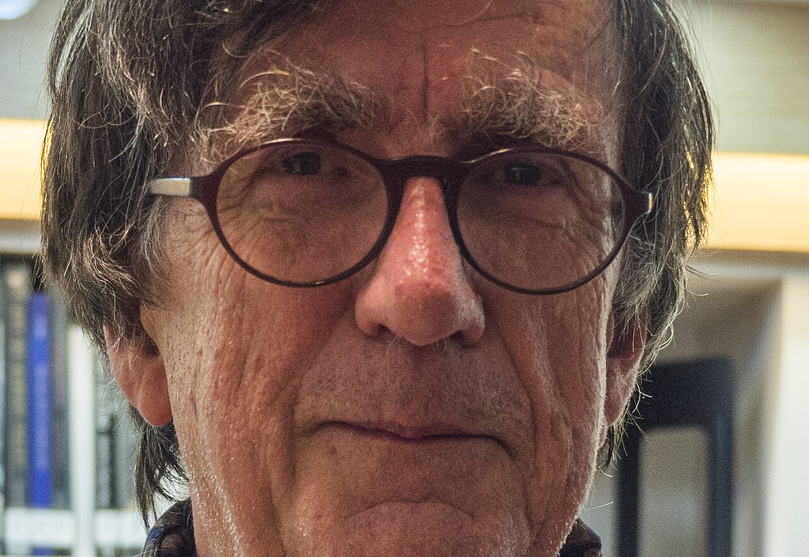

思想资源
塞尔、塔德与 STS
米歇尔·塞尔、加布里埃尔·塔德、民族方法学、符号学与科学技术研究，提供了问题和方法资源。
布鲁诺·拉图尔 · 1947—2022
从实验室里的事实，到技术项目、现代性与气候政治：他不断追问，事实、技术和秩序是如何被共同组装出来的？
这一页先建立四个整体坐标。点击每一部分，可进入简写的后续内容；原著、案例和文献会随阅读继续补充。

先建立一张地图
01 · 人物生平
出生于法国勃艮第，接受哲学与神学训练；对知识、信仰和解释方式的兴趣构成早期背景。
科特迪瓦经历使他接触跨文化与现场研究；随后进入索尔克研究所观察实验室实践。
《实验室生活》之后，他与伍尔加、卡龙、约翰·劳等人共同推动科学技术研究和行动者网络理论。
研究从自然／社会二分推进到盖娅、陆地和新气候体制；2022 年在巴黎去世。
后续可从家庭背景、教育、科特迪瓦经历、索尔克研究所、巴黎高等矿业学校与巴黎政治学院等路径补充。当前优先保留“经历如何改变研究对象”的线索。
02 · 阶段问题
变化的不只是时间，还有他所在的空间、面对的对象与解释规则：从美国生物实验室，到巴黎的科学技术研究中心，再到现代性与气候政治的公共场域。
| 时间 | 空间／机构 | 变化的对象或变量 | 问题 | 如何推进思考 |
|---|---|---|---|---|
| 1976—1979 | 美国索尔克生物研究所 | 从哲学文本转向科学家、样本、仪器、记录与论文 | 科学事实如何在实验实践中形成并获得可信度？ | 追踪样本如何被记录、图示、引用和稳定 |
| 1982—1990s | 巴黎高等矿业学校 CSI | 从实验室内部扩展到技术项目、组织与非人类行动者 | 不同参与者如何建立连接，共同推动一个事实或项目？ | 追踪转译、联盟、失效与黑箱如何形成 |
| 1990s—2000s | 巴黎高等矿业学校，后至巴黎政治学院 | 从网络个案转向现代性中自然／社会的分类 | 为什么一边制造混合体，一边坚持把自然与社会分开？ | 比较科学、政治、法律中的分类规则与实际混杂过程 |
| 2010s—2022 | 巴黎政治学院及气候公共讨论现场 | 从事实争论转向气候、盖娅、国家与公众的共同处境 | 在无法脱离地球系统的条件下，政治应如何重新组织？ | 把气候报告、否认论、盖娅与公众争论放进同一政治问题 |
当一套事实、技术或制度在具体现场逐步成形时，哪些人类与非人类的连接使它获得稳定性，又改变了谁的行动？
每一阶段的回答都来自不同的现场与材料：实验室里的铭写装置、技术项目的转译链、现代性分类的制度文本，以及气候政治中的报告、否认论与公共争论。
03 · 思想坐标
思想资源
米歇尔·塞尔、加布里埃尔·塔德、民族方法学、符号学与科学技术研究，提供了问题和方法资源。
共同研究
实验室民族志、转译与行动者网络理论并非拉图尔一人独立完成，而是在合作网络中形成。
直接争论
一个争点是：非人类能否进入解释；另一个争点是：事实的建构过程是否损害事实的实在性。
后续批评
女性主义、后殖民和批判社会学提醒：网络描述不能压平资源、风险和发言权的不平等。
拉图尔的理论是在塞尔、塔德、STS 与共同研究者的资源中形成，也持续面对关于事实、权力、性别与殖民的批评。
04 · 视角边界
不同阶段分别聚焦实验室事实、异质行动者的连接、现代性分类与生态政治。
连续线索是：正在形成、尚未稳定、需要多方协作才能成立的事实、技术和秩序。
当问题转向资本、阶级、殖民、性别、正义或主体经验时，需要结合马克思主义、女性主义、后殖民理论、政治哲学和心理社会理论。
这里借用乔治·凯利的“聚焦点—便利范围”分析：不问理论是否万能，而问它最适合解释什么、在何处开始遗漏重要现象。
本页依据“拉图尔最小全局”、资料卡与结构阅读底稿搭建。当前内容是研究中的简写版本；原著段落、精确页码、争议文献与详细传记将随阅读继续补充。